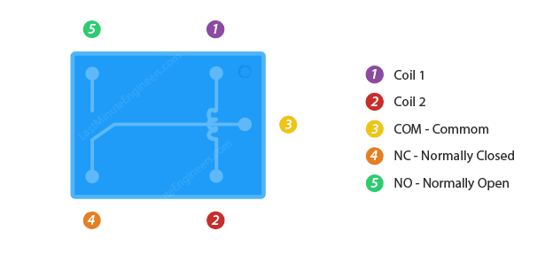
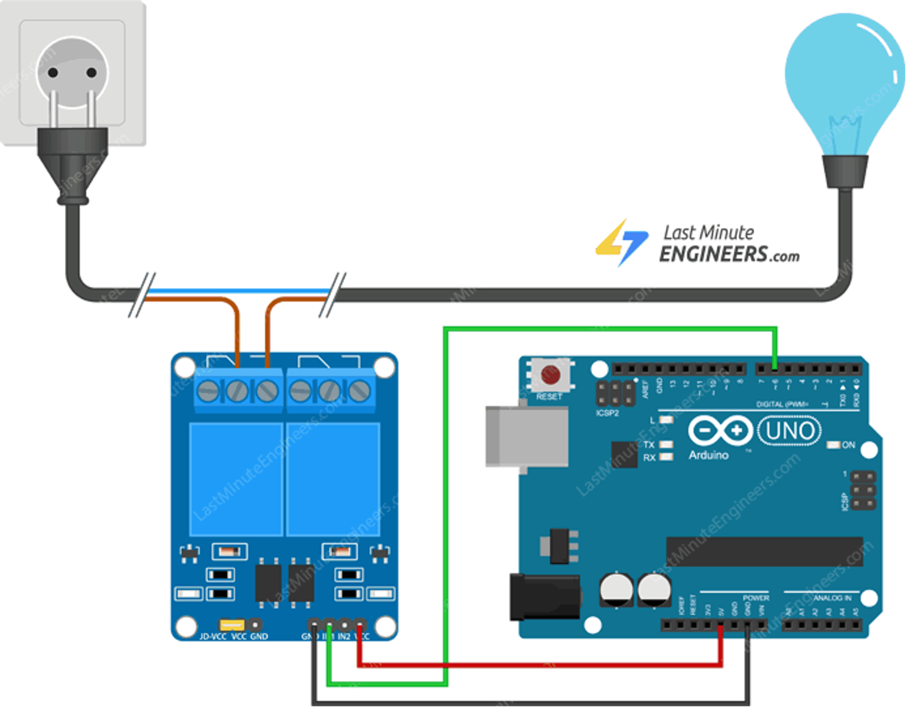

What you'll learn
- ✓ What a relay is and how it works inside
- ✓ The difference between COM, NO, and NC terminals
- ✓ How to control a relay with a single microcontroller pin
- ✓ How relays can be used in real home automation and device control
Hardware needed
2-channel relay board
Included in your kit. Controls two independent circuits from a single board.
ESP32 or Arduino
Your development board provides the 3.3V or 5V control signal.
Jumper wires
GND, VCC, and one signal wire per relay channel you want to use.
Small DC load
Optional — an LED, small fan, or motor makes it easy to see the relay switching.
Relay terminals explained
The relay board has two sets of connections — the high-voltage/current side that switches your load, and the low-voltage control side that plugs into your board.
Understanding the JD-VCC jumper
Shared power supply
JD-VCC is connected to VCC. The relay coils and the control logic share the same 5V supply. Fine for most small DC loads and learning projects.
Isolated power supply
Connect an external supply (e.g. 12V) directly to JD-VCC. Better electrical isolation protects the microcontroller from the high-voltage load side. Use this for AC or larger loads.
Wiring & safety
For a basic test with your development board, connect three wires from the relay's control side:

AC load wiring
When switching an AC device (like a lamp) the line wire from the receptacle passes through the relay. Use the isolated JD-VCC configuration for better protection.

Arduino sketch
Controlling a relay is as simple as toggling a pin. This sketch alternates the relay on and off every 3 seconds — you'll hear a click each time it switches.
#define RelayPin 13 void setup() { // Set RelayPin as an output pin pinMode(RelayPin, OUTPUT); } void loop() { // Turn ON the relay (NC terminal active) digitalWrite(RelayPin, LOW); delay(3000); // Turn OFF the relay digitalWrite(RelayPin, HIGH); delay(3000); }
Upload the sketch and you should hear the relay clicking on and off every 3 seconds. If you have a small load connected, it will switch on and off with the relay.